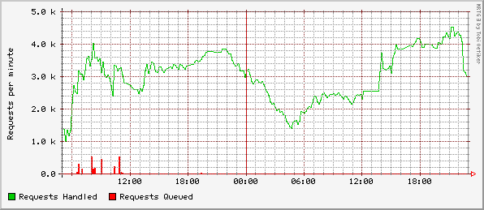

Graphs for proxy-312
Summary
Performance of proxy-312's mcproxyd daemon.
Values at last update:
Requests Handled
: 2.94 kreqs/min
[ ? ]
Requests Queued
: 0.00 reqs/min
[ ? ]
Last updated at Thu Feb 4 22:52:23 1999
Time Ranges:
Hourly
Daily
Short-Term
Long-Term
All
Hourly graph

Daily graph
About the data...
Requests Handled
The rate at which the server is handling requests. (period-req-handled / 5)
Requests Queued
The rate at which the server is queueing requests. (period-reqs-queued / 5)
Cricket
For questions or comments about this data, contact
the Cricket Admins
.
 Graphs for proxy-312
Graphs for proxy-312
Graphs for proxy-312
Graphs for proxy-312